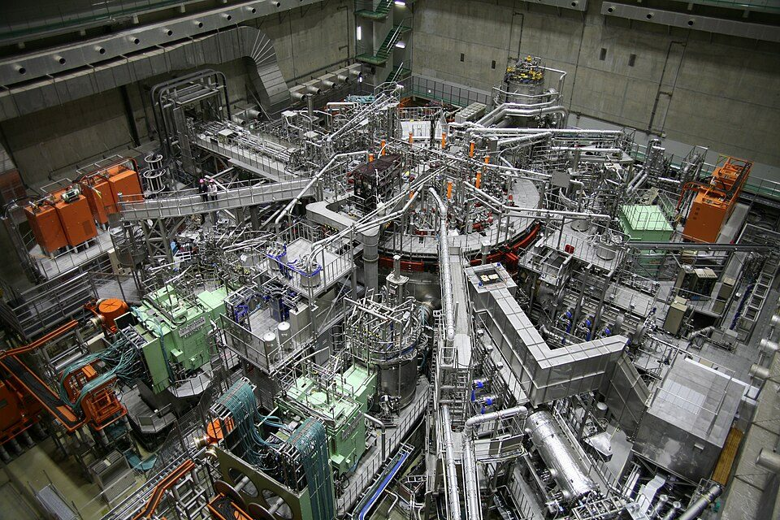
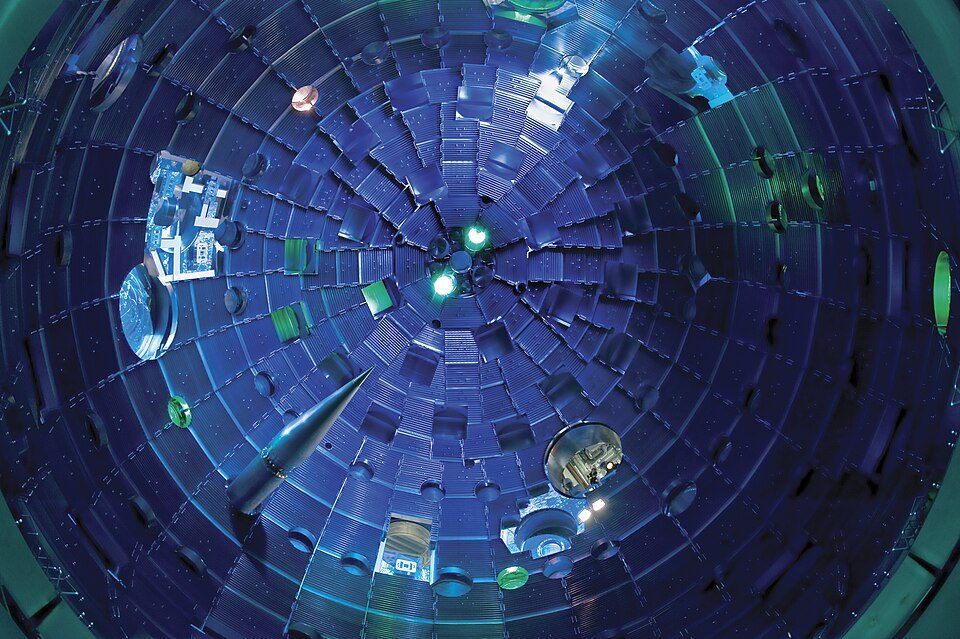
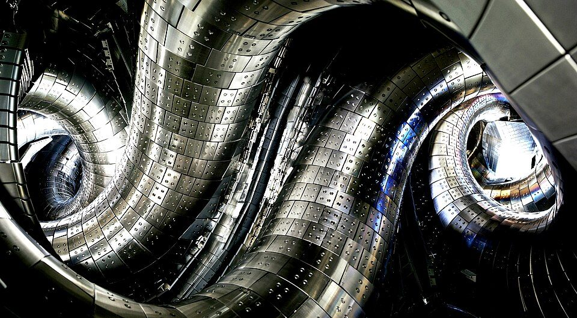
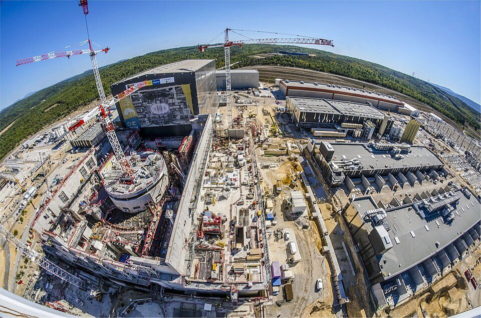

核融合発電は実現できるのか？ 仕組み、必要な条件、ITERと日本の計画、世界の記録、残る課題（2026年版）
要点まとめ
核融合発電は「地上の太陽」とも呼ばれ、ここ数年、国の目標や民間企業の大きな資金調達のニュースが増えています。では、本当に実現できるのでしょうか。この記事では、核融合の仕組みと発電までに越えるべき条件、世界の記録、ITERと日本の計画、民間企業の目標、残る課題を、公的機関・研究機関の資料を中心にまとめました。実現の時期は断定せず、各機関が示す目標と課題を並べています。

核融合とは
軽い原子核どうしが融合して、大きなエネルギーが出る
重水素と三重水素から、ヘリウムと中性子ができる
日本原子力研究開発機構の解説によると、重水素と三重水素の反応では、ヘリウム（3.5MeV）と中性子（14.1MeV）ができます[1]。量子科学技術研究開発機構（QST）は、プラズマを1億度以上に加熱すると核融合反応が起き、燃料1gで石油約8トン分のエネルギーが出ると説明しています[2]。重水素は海水中に約60億年分あるとしています[2]。
| 項目 | 説明 |
|---|---|
| 反応の暴走 | 原理的に連鎖反応ではないので、核分裂炉のような暴走は起こらない[6] |
| 炉の中の燃料 | ITERの真空容器の中にある燃料は、どの瞬間でも1g未満[7] |
| 廃棄物 | 長寿命の高レベル放射性廃棄物はほとんど生じない[6]。ただし中性子で放射化した構造材などが出る[8] |
| 法律での扱い | 原子炉等規制法の対象外。今の実験装置は放射性同位元素等規制法（RI法）の「プラズマ発生装置」として規制[9] |
発電までに越えるべき条件
温度・密度・閉じ込める時間の3つをそろえる
外から加熱しなくても反応が続く状態が「自己点火」
日本原子力研究開発機構の解説では、核融合の条件は、プラズマの温度・密度・閉じ込め時間の3つで表されます[1]。外部からの入力なしで核融合反応が続く条件を「自己点火条件」と呼び、温度は約1億度以上が目安です[1]。
ITERの目標は、入れた加熱の10倍の出力
50MWの加熱で、50万kW（熱）を400秒出す（Q≧10）
ITERは、50MWの加熱に対して500MW（50万kW）の核融合の熱出力を、400秒のパルスで出すことを目指しています（Q≧10）[3]。この50万kWは熱の出力で、電気の出力ではありません[3]。QSTは、ITERを50万kWの核融合出力を長時間出す実験炉だと説明しています[6]。
今どこまで来たか（世界の記録）
レーザー方式のNIFは、投入したレーザーより多くのエネルギーを得た
2025年4月には、約2MJの投入で8.6MJ
米エネルギー省によると、国立点火施設（NIF）は2022年12月に、2.05MJのレーザーを標的に入れて3.15MJの核融合エネルギーを得ました[10]。2025年4月には、2.08MJで8.6MJを得ています[11]。ただし、レーザー装置を動かすには電力網から約300MJを使っていたと報じられています[12]。米エネルギー省も、発電にはまだ多くの技術開発が必要だとしています[10]。

磁場で閉じ込める方式でも、記録が伸びている
欧州JETは最後の実験で69MJ。中国EASTは1億度超を1066秒
英国の発表によると、欧州のJETは2023年の最後の実験で、わずか0.2mgの燃料で約5秒間に69MJのエネルギーを出しました[13]。新華社によると、中国のEASTは2025年1月に、1億度を超えるプラズマの運転を1066秒続けました[14]。

ITERの計画
本格的な燃料の運転は2039年。計画は約4年遅れた
2024年の新計画で、研究運転の開始は2034年に
ITERは、欧州・中国・インド・日本・韓国・ロシア・米国の7極が共同で建設している実験炉で、欧州が建設費の約半分を負担しています[3]。2024年の新しい計画では、研究運転の開始が2034年、重水素-三重水素の運転の開始が2039年で、前の計画より約4年遅れました[3]。ITER機構の追加費用は約50億ユーロで、参加国が精査しています[20]。

日本の戦略と目標時期
「2030年代の発電実証」を目標にした
2025年6月の戦略改定で、従来の2050年頃から前倒し
内閣府の「フュージョンエネルギー・イノベーション戦略」は、2025年6月の改定で、世界に先駆けた2030年代の発電実証を目指すとしました（従来の政府方針は2050年頃）[4]。規制は当面、RI法の対象として位置づけ、新しい知見に応じて柔軟に見直すとしています[4]。
コストが合わなければ、目標を変えるとも明記した
市場で通用しない発電システムの実証には意味がない、と内閣府
2026年4月の内閣府の文書は、市場性が見込まれない発電システムを目指した発電実証には意味がないとし、ほかのエネルギーと大きな差がないか、それより安いコストの発電につながることを求めました[8]。それが満たせない場合は、2030年代の発電実証という政府目標を変えることになるとしています[8]。
- 2023年4月
日本初の核融合の国家戦略をつくる
- 2025年6月
戦略を改定し、2030年代の発電実証を目標に
- 2034年
ITERの研究運転の開始（計画）
- 2038年
Q-DEMOの第1期の運転開始（QSTの案）
- 2039年
ITERの重水素-三重水素の運転開始（計画）
民間企業の計画
| 企業 | 目標 |
|---|---|
| Commonwealth Fusion Systems（米国） | 実験装置SPARCで2027年にQ>1[24]。40万kWの発電所ARCで2030年代前半に送電[25]。GoogleとEniが、発電所の電力の半分以上を買う契約を結んだ[26] |
| Helion Energy（米国） | 2028年までに発電所を稼働させ、Microsoftに電力を供給。50MW以上が目標[27] |
| Helical Fusion（日本） | 2030年代中に、発電初号機「Helix KANATA」で実用発電を目指す[28] |
| Starlight Engine（日本） | トカマク方式の「FAST」で2030年代の発電実証を目指す[29] |
米エネルギー省は2023年に、核融合の試験発電所の設計を進める8社に4600万ドルの支援を決めました[30]。
残る課題
| 課題 | 内容 |
|---|---|
| 三重水素の確保 | 世界の在庫は約20kg[7]。リチウムに中性子を当てて増やす試験をITERで行う[31]。増やして回収する技術は、どの国も開発段階[23] |
| 材料 | 高いエネルギーの中性子で、もろくなったり膨らんだりする。それに耐える材料の寿命を評価する技術が必要[23] |
| 保守 | 放射化で人が入れなくなるため、遠隔の機器で保守する必要がある[23] |
| コスト | ほかのエネルギーと大きな差がないコストにする必要がある[8] |
| 規制 | 原子力規制庁が、まず三重水素の「閉じ込め」機能について検討している[32] |
結局、いつ実現するのか
目標はあるが、発電はまだどこでも実証されていない
日本の官民投資ロードマップ（仮訳）は、核融合による発電はまだ世界のどこでも実証されていないとしています[5]。科学的には、投入したエネルギーより多くのエネルギーを得る段階まで来ましたが、設備全体を動かす電力より多くの電気を安定して生み出すには、三重水素・材料・コストなどの課題が残っています（筆者の見解）。各機関や企業の目標は2030年代に集まっていますが、ITERの計画が遅れた例もあり、実現の時期は今後の実証の結果しだいと考えられます（筆者の見解）。
今回確認できなかった点
- ITERの建設費の総額（公式の総額は示されていない）
- NIFのレーザーが使った約300MJを、研究所や米エネルギー省自身が書いた文書
- 中国EASTの記録の中国科学院の公式発表（報道で確認した）、韓国KSTARの最新の記録
- 経済産業省の補助事業の採択の公表と補助額（読めなかった）
- RI法の改正など、核融合の新しい規制の時期
出典（32件）
閲覧日はいずれも2026年11月10日
- 核融合反応と熱エネルギー（日本原子力研究開発機構 ATOMICA）
- QST/JADAのフュージョンへの取組み（2025年9月18日）（量子科学技術研究開発機構（QST））
- Press Conference SUMMARY（新ベースライン、2024年7月3日）（ITER機構）
- フュージョンエネルギー・イノベーション戦略（2025年6月4日改定）概要（内閣府）
- Public-Private Investment Roadmap for Fusion Energy（仮訳、2026年7月）（内閣府掲載（日本成長戦略本部））
- 核融合との関係（ITER）（量子科学技術研究開発機構（QST））
- Fuelling（ITER機構）
- フュージョンエネルギーの社会実装に向けた取組の在り方（2026年4月8日）（内閣府）
- フュージョンエネルギーの実現に向けた安全確保の基本的な考え方（2025年3月25日）（内閣府）
- DOE National Laboratory Makes History by Achieving Fusion Ignition（2022年12月13日）（米エネルギー省（DOE））
- Annual Report 2025: National Ignition Facility（ローレンス・リバモア国立研究所）
- Ignition Accomplished: NIF Looks to the Future（2022年12月）（Optica（Optics & Photonics News））
- JET's final tritium experiments yield new fusion energy record（2024年2月8日）（英国政府（UKAEA））
- 聚变发电更近一步！中国"人造太阳"跨越"亿度千秒"大关（2025年1月20日）（新華社）
- JT-60SAの初プラズマ生成（2023年10月24日）（量子科学技術研究開発機構（QST））
- Europe and Japan restart JT-60SA（2026年3月13日）（Fusion for Energy（EU））
- NIFS NEWS 235「重水素実験の開始にあたって」（核融合科学研究所）
- NIFS NEWS 239「年頭のごあいさつ」（2018年1月）（核融合科学研究所）
- 2025年度 技術職員報告書（2026年6月）（核融合科学研究所 技術部）
- New baseline to prioritize robust start to exploitation（2024年7月）（ITER機構）
- Two-thirds of ITER tokamak core now in place（2026年7月29日）（ITER機構）
- 「Q-DEMOの概念設計」報告書（概要）（2026年3月16日）（量子科学技術研究開発機構（内閣府の会議資料））
- 核融合科学技術委員会（第43回）資料「今後の検討について」（2026年9月25日）（文部科学省）
- SPARC（Commonwealth Fusion Systems）
- First Fusion Company to Apply to PJM Interconnection（2026年4月28日）（Commonwealth Fusion Systems）
- Commonwealth Fusion Systems Raises Another $1 Billion（2026年7月30日）（Commonwealth Fusion Systems）
- Helion announces world's first fusion PPA with Microsoft（2023年5月10日）（Helion Energy）
- シリーズBラウンド 1stクローズの資金調達（2026年4月28日）（Helical Fusion（PR TIMES））
- 第三者割当増資により総額60億円超の外部資金を初めて調達（2026年7月15日）（Starlight Engine（PR TIMES））
- U.S. Department of Energy Announces $46 Million for Commercial Fusion Energy Development（2023年5月31日）（米エネルギー省 科学局）
- Tritium: changing lead into gold（2016年2月19日）（ITER機構（ITER Mag））
- 原子力規制庁におけるフュージョン装置の安全規制に係る取組（2026年4月8日）（原子力規制庁（内閣府の会議資料））
写真・画像の出典（4件）
- 核融合科学研究所の大型ヘリカル装置（LHD）
写真: National Institute for Fusion Science／Wikimedia Commons（CC BY-SA 4.0） - NIFの標的の部屋の内部
写真: Lawrence Livermore National Security／Wikimedia Commons（CC BY-SA 3.0） - LHDの真空容器の内部
写真: National Institute for Fusion Science／Wikimedia Commons（CC BY-SA 4.0） - 建設中のITER（2017年）
写真: Oak Ridge National Laboratory／Wikimedia Commons（CC BY 2.0）